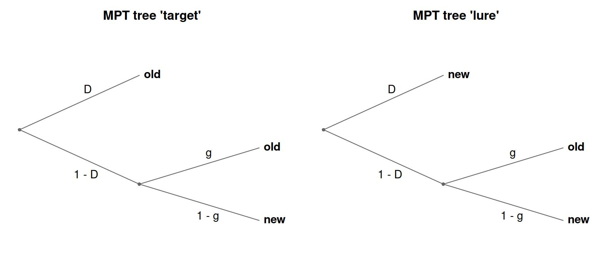
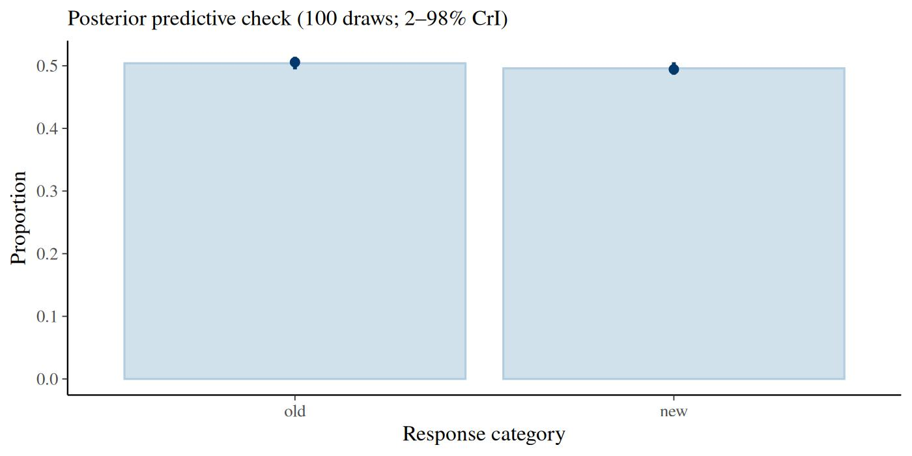
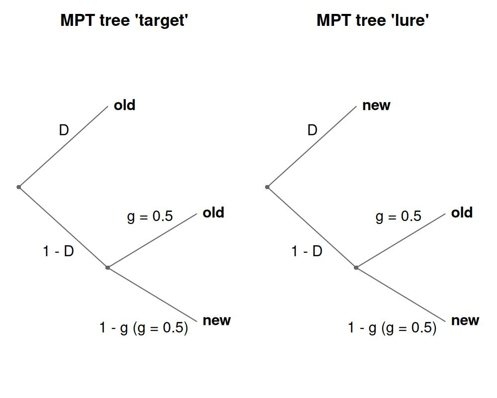
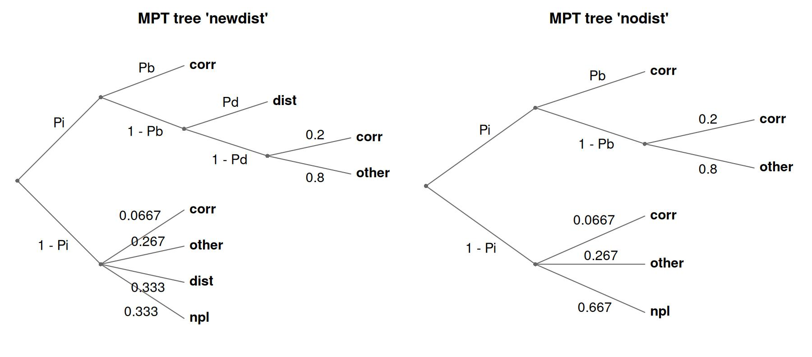
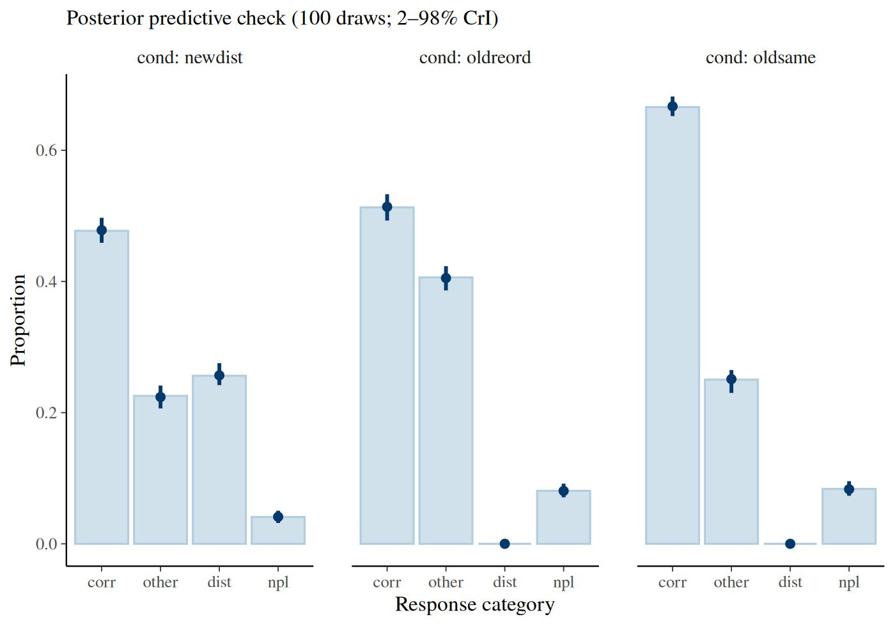

Multinomial Processing Tree (MPT) models
Gidon Frischkorn
Source:vignettes/articles/bmm_mpt.Rmd
bmm_mpt.Rmd1 Introduction to the model
Multinomial Processing Tree (MPT) models are a family of measurement models for tasks with categorical responses (Riefer and Batchelder 1988; Batchelder and Riefer 1999; Erdfelder et al. 2009). They assume that each observed response results from a sequence of discrete latent processing states, for example detecting an item in memory and, if detection fails, guessing. Each latent process succeeds with some probability, and the branches of the resulting processing tree map every combination of latent outcomes onto one observable response category. The probability of a response category is the sum of the probabilities of all branches that terminate in it, and each branch probability is the product of the process probabilities along its path.
The classic example is the two-high-threshold model (2HTM) of recognition memory. In an old/new recognition test, participants see two kinds of probe, targets (items studied before) and lures (new items), and respond “old” or “new” to each. The 2HTM assumes different processes for the two kinds of probe. A target is detected as old with probability \(D\); if detection fails (probability \(1 - D\)), the participant guesses “old” with probability \(g\). A lure is detected as new with probability \(D\) (the two detection probabilities can also be separated), and otherwise guessed on in the same way. The model therefore has one tree per probe type, not one per response: the target tree and the lure tree each end in both responses, “old” and “new”.

Each panel is one tree, titled with the probe type it describes. Its leaves are the response categories, “old” and “new”, which both trees share. A response category collects the probability of every leaf that ends in it, which gives:
\[ \begin{aligned} P(\text{"old"} \mid \text{target}) &= D + (1 - D) \cdot g \\ P(\text{"new"} \mid \text{target}) &= (1 - D) \cdot (1 - g) \\ P(\text{"old"} \mid \text{lure}) &= (1 - D) \cdot g \\ P(\text{"new"} \mid \text{lure}) &= D + (1 - D) \cdot (1 - g) \end{aligned} \]
In bmm, MPT models are fit as hierarchical Bayesian models: all latent probability parameters are estimated on an unconstrained latent scale (logit by default, or probit), where they can be predicted by fixed and random effects using the standard bmmformula syntax. With a probit link and correlated random effects across all parameters, this is the latent-trait approach of Klauer (2010) as implemented, for example, in TreeBUGS (Heck et al. 2018).
The article follows the order of a typical analysis: specifying the trees, preparing and simulating data, fitting, interpreting the estimates, constraining parameters, and two extensions (covariates inside branch expressions, non-linear parameter formulas), followed by a real-data example. If you already have a model file for multiTree, MPTinR or TreeBUGS, jump to Importing existing model definitions; if you are coming from MPTinR or TreeBUGS, read Specifying an MPT model first and then Migrating from MPTinR or TreeBUGS, which maps the functions of those packages onto bmm.
2 Specifying an MPT model
An MPT model is specified as a set of trees. Each tree is created with mpt_tree(): it has a name, and one branch-probability expression per response category, written as a formula category ~ expression:
library(bmm)
tree_target <- mpt_tree("target",
old ~ D + (1 - D) * g,
new ~ (1 - D) * (1 - g)
)
tree_lure <- mpt_tree("lure",
old ~ (1 - D) * g,
new ~ D + (1 - D) * (1 - g)
)
tree_target
#> MPT tree 'target':
#> P(old) = D + (1 - D) * g
#> P(new) = (1 - D) * (1 - g)The first argument names the probe type the tree describes; the left-hand sides are the response categories, and every tree lists the same ones. The formulas only carry the expressions and the response category on the left-hand side; nothing in them is evaluated. The expressions can equally be given as a named list of character strings, which is the form that mpt_from_string() and mpt_from_eqn() produce. The two spellings give identical trees:
tree_target_strings <- mpt_tree("target", list(
old = "D + (1 - D) * g",
new = "(1 - D) * (1 - g)"
))
identical(tree_target, tree_target_strings)
#> [1] TRUEThe trees are combined into a model object with mpt(). The tree_id argument names the data column whose values say which tree each observation belongs to; here item_type, holding "target" and "lure", which must match the tree names. The response counts go in columns named after the response categories, old and new (see Data format and simulation). Printing the model lists the trees and then checks identifiability in two ways: it compares the number of free parameters with the degrees of freedom the trees provide (response categories minus 1, summed over trees), the classical bound that MPTinR’s check.mpt() reports, and it computes the rank of the Jacobian of the category probabilities at interior parameter values:
#> mpt(trees = list(tree_target, tree_lure), tree_id = "item_type")
#> Response: resp_cats = old, new (counts per response category)
#> Parameters: D, g
#> Links: D = logit; g = logit
#> MPT tree 'target':
#> P(old) = D + (1 - D) * g
#> P(new) = (1 - D) * (1 - g)
#> MPT tree 'lure':
#> P(old) = (1 - D) * g
#> P(new) = D + (1 - D) * (1 - g)
#> Identifiability (intercept-only formulas): 2 free parameter(s), 2 degrees of freedom (response categories minus 1, summed over trees)
#> Jacobian rank 2 of 2 at interior test values: locally identified.
#> Use parameter_info() for parameter descriptions, links and fixed values.The two checks answer different questions. The classical bound counts parameters against the information the response categories carry; the rank asks whether the branch expressions actually separate the parameters they contain, which can fail even when the counting works out. Locally identified means the rank is full at the test values, so no direction in parameter space leaves every category probability unchanged there. Both checks assume intercept-only formulas, which is why the printed line says so. bmm() follows two rules: it warns when the rank is deficient and every formula is intercept-only, and it only says that predictors or non-linear formulas may identify the parameters, without checking, when any formula has a predictor or is non-linear. It does not look at the data. parameter_info() lists the parameters with their links and any fixed values.
tree_id is about structure, not about experimental manipulations. A separate tree is needed only when the branch expressions themselves differ, that is, when the trial determines which latent processes apply or which response categories are reachable at all. Effects of experimental factors on the parameters go in the parameter formulas, exactly as in every other bmm model. The two roles are independent, and the same column can serve both when a factor happens to change the structure as well.
The plot() method draws the processing trees implied by the branch expressions: each product in an expression is one root-to-leaf path, and paths sharing a common prefix share the corresponding nodes. This is a quick way to verify that the expressions encode the intended tree; the figure in the Introduction to the model was drawn with this call:
plot(model_2htm)The latent parameters are identified automatically from the branch expressions: every symbol that is not a declared covariate (see Design-fixed covariates in branch expressions) is treated as a parameter. Equality constraints follow directly from the naming. Because both trees use the same symbol D, detection is equated for targets and lures. To estimate separate detection probabilities, write Do and Dn instead:
tree_target_sep <- mpt_tree("target", list(
old = "Do + (1 - Do) * g",
new = "(1 - Do) * (1 - g)"
))
tree_lure_sep <- mpt_tree("lure", list(
old = "(1 - Dn) * g",
new = "Dn + (1 - Dn) * (1 - g)"
))
model_2htm_sep <- mpt(
trees = list(tree_target_sep, tree_lure_sep),
tree_id = "item_type"
)
model_2htm_sep#> mpt(trees = list(tree_target_sep, tree_lure_sep), tree_id = "item_type")
#> Response: resp_cats = old, new (counts per response category)
#> Parameters: Do, g, Dn
#> Links: Do = logit; g = logit; Dn = logit
#> MPT tree 'target':
#> P(old) = Do + (1 - Do) * g
#> P(new) = (1 - Do) * (1 - g)
#> MPT tree 'lure':
#> P(old) = (1 - Dn) * g
#> P(new) = Dn + (1 - Dn) * (1 - g)
#> Identifiability (intercept-only formulas): 3 free parameter(s), 2 degrees of freedom (response categories minus 1, summed over trees)
#> More free parameters than degrees of freedom: the model is not identified without further constraints.
#> Jacobian rank 2 of 3 at interior test values: the combination of all
#> free parameters is not identified by the branch expressions.
#> Use parameter_info() for parameter descriptions, links and fixed values.The printed note is the well-known result that a 2HTM with separate detection parameters is not identified from a single old/new test: three free parameters, two degrees of freedom, and a Jacobian of rank 2, so one combination of the three cannot be estimated. The model becomes identifiable with a second condition that varies the response bias (different base rates or payoffs), which adds two degrees of freedom and one parameter, or with a restriction (see Constraining parameters). The order constraint \(D_o > D_n\) shown there is a different kind of remedy: it keeps the two detection parameters ordered in every posterior draw, but it does not add information, so the rank deficit remains and \(D_n\) stays weakly determined.
Two things to keep in mind when writing branch expressions:
- Parameter and category names must consist of letters and digits only (no underscores or dots), because they become non-linear parameters in brms.
- Numeric fractions such as
1/4are converted to decimal literals (0.25) when the tree is created. In Stan, a bare integer fraction would be evaluated as integer division.
The default link is the logit. links = "probit" selects the probit link that latent-trait MPT models traditionally use for every parameter, and switches the default priors accordingly (see Default priors); a named list, links = list(D = "probit"), switches single parameters and their priors:
3 Data format and simulation
The data contain one column of aggregated response counts per response category, named after the branch names of the trees, plus the tree_id column. Aggregated counts are sufficient whenever parameters and covariates are constant within participant and condition. Trial-level data (one row per trial with a 1 in the chosen category’s column) also work and are only needed when predictors vary from trial to trial.
The distribution functions dmpt() and rmpt() provide the multinomial density and random generation for any mpt() model. rmpt() draws the counts for one tree and one parameter vector; a short function around it simulates a hierarchical data set in the shape of TreeBUGS’ genTraitMPT(): population means on the probability scale, participant heterogeneity as standard deviations on the latent scale (here the logit scale; the sigma of genTraitMPT() is on the probit scale, see Default priors for the conversion).
simulate_2htm <- function(n_subj, n_items, mean, sd) {
latent <- data.frame(
D = rnorm(n_subj, qlogis(mean[["D"]]), sd[["D"]]),
g = rnorm(n_subj, qlogis(mean[["g"]]), sd[["g"]])
)
dat <- expand.grid(
id = factor(seq_len(n_subj)),
item_type = c("target", "lure"),
stringsAsFactors = FALSE
)
counts <- t(sapply(seq_len(nrow(dat)), function(i) {
subj <- as.integer(dat$id[i])
rmpt(
n = 1, size = n_items,
pars = plogis(c(D = latent$D[subj], g = latent$g[subj])),
mpt_model = model_2htm, tree = dat$item_type[i]
)[1, ]
}))
cbind(dat, counts)
}
set.seed(124)
dat <- simulate_2htm(
n_subj = 40, n_items = 100,
mean = c(D = 0.7, g = 0.5), sd = c(D = 0.4, g = 0.3)
)
head(dat)
#> id item_type old new
#> 1 1 target 78 22
#> 2 2 target 87 13
#> 3 3 target 77 23
#> 4 4 target 80 20
#> 5 5 target 89 11
#> 6 6 target 90 10Each participant contributes two rows, one per probe type, and the counts in the old and new columns sum to 100 within a row.
4 Fitting the model
Model parameters are predicted with the usual bmmformula syntax. Here both parameters get a population intercept and a random intercept per participant. Written as (1 | id) in each formula, the two person effects are independent of each other, which matches the simulation above: it draws D and g independently. A shared label, (1 |p| id) in both formulas, would estimate their correlation as well, which is the latent-trait model; Migrating from MPTinR or TreeBUGS discusses these options.
fit_2htm <- bmm(
formula = bmf(
D ~ 1 + (1 | id),
g ~ 1 + (1 | id)
),
data = dat,
model = model_2htm,
backend = "cmdstanr",
cores = 4,
refresh = 0,
file = "fits/mpt_2htm_v2"
)
summary(fit_2htm)
#> Loading required namespace: rstan#> Model: mpt(trees = list(tree_target, tree_lure),
#> tree_id = "item_type")
#> Links: D = logit; g = logit
#> Formula: D ~ 1 + (1 | id)
#> g ~ 1 + (1 | id)
#> Data: dat (Number of observations: 80)
#> Draws: 4 chains, each with iter = 2000; warmup = 1000; thin = 1;
#> total post-warmup draws = 4000
#>
#> Multilevel Hyperparameters:
#> ~id (Number of levels: 40)
#> Estimate Est.Error l-95% CI u-95% CI Rhat Bulk_ESS Tail_ESS
#> sd(D_Intercept) 0.35 0.06 0.24 0.48 1.00 1568 2067
#> sd(g_Intercept) 0.19 0.10 0.02 0.38 1.01 755 1342
#>
#> Regression Coefficients:
#> Estimate Est.Error l-95% CI u-95% CI Rhat Bulk_ESS Tail_ESS
#> D_Intercept 0.77 0.07 0.64 0.90 1.00 1769 2560
#> g_Intercept 0.05 0.06 -0.07 0.17 1.00 3655 2477
#>
#> Draws were sampled using sample(hmc). For each parameter, Bulk_ESS
#> and Tail_ESS are effective sample size measures, and Rhat is the potential
#> scale reduction factor on split chains (at convergence, Rhat = 1).All estimates are on the logit scale; the next section converts them to probabilities.
4.1 Default priors
The default priors are matched to the link function: with the logit link, intercepts and regression effects both get a logistic(0, 1) prior, which for an intercept is a uniform distribution on the probability scale. Effects get the same width as intercepts because a narrower prior pulls condition differences toward zero when the formula is written as 1 + cond. With links = "probit", both get normal(0, 1), matching the priors typically used in latent-trait MPT models. Random-effects standard deviations get exponential(1) with the logit link and exponential(2) with the probit link, because a probit SD is about 1/1.7 of the logit SD it corresponds to; the rate of 1.7 this implies is rounded to 2.
default_prior(bmf(D ~ 1, g ~ 1), data = dat, model = model_2htm)
#> prior class coef group resp dpar nlpar lb ub tag source
#> (flat) b D default
#> (flat) b g default
#> logistic(0, 1) b Intercept D <NA> <NA> user
#> logistic(0, 1) b Intercept g <NA> <NA> userA prior given as prior("normal(0, 3.1623)", class = "b", nlpar = "D") replaces the defaults of every coefficient of D, its intercept included; add coef = "Intercept" to set the intercept alone.
5 Interpreting the estimates
5.1 Population-level probabilities
native_parameters() turns the latent-scale estimates into probabilities. With re_formula = NA it sets all person effects to zero, and summary = TRUE summarizes the transformed draws:
native_parameters(fit_2htm, re_formula = NA, summary = TRUE)
#> parameter Estimate Est.Error Q2.5 Q97.5
#> 1 D 0.6839576 0.01427750 0.6555726 0.7113525
#> 2 g 0.5126846 0.01514929 0.4830252 0.5431000The function applies the inverse link to the linear predictor of each combination of predictors, not to individual coefficients. That is why it also works for models with predictors, where the inverse link applied to an effect coefficient is not a probability, and for the probit link. Summarizing after the transformation matters for the point estimate: transforming the summary of the latent estimates instead returns correct interval bounds, because quantiles survive a monotone transformation, but a wrong Estimate, because the mean of a transformed parameter is not the transform of its mean.
These are the probabilities of a participant at the latent mean, that is, of the median participant. They are not the population mean of the participants’ probabilities: because the inverse link is non-linear, that mean lies closer to 0.5, and the two differ noticeably when the latent standard deviation is near 1. The median participant is the quantity that TreeBUGS reports as "mean" in getParam(). ?native_parameters (section “Group-level effects”) explains the distinction.
5.2 Participant-level probabilities
native_parameters() returns a parameter on the probability scale, population effects and random effects combined, for every combination of its predictors in the data. D depends on the participant only, so this is one row per participant; summary = TRUE summarizes the draws after the transformation, as above:
D_subj <- native_parameters(fit_2htm, pars = "D", summary = TRUE)
head(D_subj)
#> id parameter Estimate Est.Error Q2.5 Q97.5
#> 1 1 D 0.6195365 0.04637016 0.5226640 0.7076391
#> 2 2 D 0.6531443 0.04528847 0.5613848 0.7358516
#> 3 3 D 0.6472766 0.04432160 0.5555290 0.7283986
#> 4 4 D 0.6205777 0.04472506 0.5305430 0.7036887
#> 5 5 D 0.7332962 0.03939004 0.6517709 0.8060377
#> 6 6 D 0.7608393 0.03821685 0.6820111 0.8310943With newdata, the same call gives the probabilities for new participants or conditions, and re_formula = NA leaves out the random effects. For work on the latent scale, brms::posterior_linpred() with the nlpar argument returns the latent value of one parameter for every row of the data and every posterior draw.
5.3 Posterior predictive checks
Because the model uses a multinomial family, pp_check() produces a response-proportion plot: the observed proportion of each response category against the posterior predictive distribution.
pp_check(fit_2htm)
The group argument splits the check by a predictor variable of the model. The tree column of this fit is not a predictor (no parameter formula uses it), so the check pools both probe types here; the real-data example in Fitting real data groups by its condition factor, which also selects the tree. Condition effects, hypothesis tests, a goodness-of-fit statistic and model comparison are shown there as well.
6 Constraining parameters
MPT analyses routinely fix parameters or set them equal. bmm offers two places to do so, and the choice is a matter of when the constraint is decided: at construction with restrictions, or at fit time in the formula.
6.1 Equality restrictions and constants at construction
The restrictions argument of mpt() accepts the string syntax of MPTinR and TreeBUGS. A restriction either equates a parameter with another one or fixes it to a constant, and chains such as "G1 = G2 = G3" map all earlier names onto the last. Restrictions are substituted into the branch expressions before the parameters are identified, so a restricted parameter is not part of the model at all. The separate-detection 2HTM with Dn = Do is the shared-detection model again:
model_2htm_restricted <- mpt(
trees = list(tree_target_sep, tree_lure_sep),
tree_id = "item_type",
restrictions = "Dn = Do"
)
model_2htm_restricted#> mpt(trees = list(tree_target_sep, tree_lure_sep), tree_id = "item_type", restrictions = "Dn = Do")
#> Response: resp_cats = old, new (counts per response category)
#> Parameters: Do, g
#> Links: Do = logit; g = logit
#> MPT tree 'target':
#> P(old) = Do + (1 - Do) * g
#> P(new) = (1 - Do) * (1 - g)
#> MPT tree 'lure':
#> P(old) = (1 - Do) * g
#> P(new) = Do + (1 - Do) * (1 - g)
#> Restrictions: Dn = Do
#> Identifiability (intercept-only formulas): 2 free parameter(s), 2 degrees of freedom (response categories minus 1, summed over trees)
#> Jacobian rank 2 of 2 at interior test values: locally identified.
#> Use parameter_info() for parameter descriptions, links and fixed values.A constant works the same way. dmpt() and the branch-sum check see the restricted expressions, and plot() labels the edges of g as g = 0.5:
model_2htm_g5 <- mpt(
trees = list(tree_target, tree_lure),
tree_id = "item_type",
restrictions = "g = 0.5"
)
names(model_2htm_g5$parameters)
#> [1] "D"
dmpt(
x = c(old = 80, new = 20), pars = c(D = 0.6),
mpt_model = model_2htm_g5, tree = "target", log = FALSE
)
#> [1] 0.09930021
plot(model_2htm_g5)
Order constraints ("Do > Dn") are not accepted by restrictions; they are expressed through the formula, as shown below.
6.2 Constants at fit time
A parameter can also be fixed in the model formula, bmf(D ~ 1 + (1 | id), g = 0.5). The parameter then stays part of the model, and freeing it again is a matter of giving it a formula. The rule of thumb: put a constant that defines the model into restrictions, and a constant that you compare against a free version into the formula. Fixed values are written on the probability scale in both cases; the formula mechanism maps them to the latent scale when the constant prior is built, so default_prior() shows constant(0) for g = 0.5 under the logit link:
default_prior(bmf(D ~ 1 + (1 | id), g = 0.5), data = dat, model = model_2htm)
#> prior class coef group resp dpar nlpar lb ub tag
#> (flat) b D
#> exponential(1) sd id D <NA> <NA>
#> exponential(1) sd Intercept id D <NA> <NA>
#> (flat) b g
#> exponential(1) sd D <NA> <NA>
#> logistic(0, 1) b Intercept D <NA> <NA>
#> constant(0) b Intercept g <NA> <NA>
#> source
#> default
#> (vectorized)
#> (vectorized)
#> default
#> user
#> user
#> user6.3 Order constraints
Requiring detection of targets to exceed detection of lures (\(D_o > D_n\)) needs no dedicated syntax: derive the larger parameter from the smaller one with a non-linear formula such that the constraint holds by construction. The recommended formulation interpolates on the probability scale:
fit_ordered <- bmm(
bmf(
Do ~ Dn + (1 - Dn) * inv_logit(phi),
Dn ~ 1 + (1 | id),
g ~ 1 + (1 | id),
phi ~ 1 + (1 | id)
),
data = dat,
model = model_2htm_sep
)Here Dn remains an ordinary logit-scale parameter with its usual priors, and phi is the (logit of the) proportion of the remaining probability space above \(D_n\) that \(D_o\) covers: \(D_o = D_n + (1 - D_n) \cdot \text{logit}^{-1}(\phi)\), which lies in \((D_n, 1)\) for every posterior draw. Because Dn appears in a non-linear formula, its link transformation is applied automatically: you write plain Dn and get \(\text{logit}^{-1}(D_n)\) in the model. Sub-parameters such as phi default to a normal(0, 1) prior; for a uniform prior on the covered proportion, replace that default with prior("logistic(0, 1)", class = "b", coef = "Intercept", nlpar = "phi").
An equivalent alternative shifts on the latent scale, as latent-trait MPT implementations usually do: Dn ~ inv_logit(lDn) and Do ~ inv_logit(lDn + exp(delta)), with lDn and delta receiving the predictor formulas. Both formulations enforce the order in every posterior draw. In a validation on simulated 2HTM data (40 participants, 100 trials per probe type, 10 data sets per gap size), the interpolation sampled without divergences at the default adapt_delta, whereas the latent-offset version produced divergences in every fit. A closer look at two of these fits tied the divergences to small values of the random-effect standard deviation of the log-gap parameter delta, not to a closing gap. Raising adapt_delta to 0.99 removed them; 0.95 did not. With a true gap of 0.20 between the two detection parameters, the 95% intervals of both detection parameters contained the generating values in all 10 data sets, under both formulations. With a gap of 0.04 they missed them in two or three of 10 data sets, and both formulations overestimated the gap.
What an order constraint does not do is restore identifiability. Replacing Do by phi leaves three free parameters against the two degrees of freedom of a single old/new test, so bmm() still reports the rank deficit of the branch expressions, as a message here because the formula for Do is non-linear. The constraint makes the posterior proper and the ordering certain, and the hierarchical structure contributes what the aggregate counts cannot, but the lower parameter is identified mainly by the prior and the order: in the validation above, the 95% credible interval of \(D_n\) averaged 0.3 to 0.4 in width, two to four times that of \(D_o\) (0.1 to 0.2), and exceeded half the unit interval in 6 of the 20 interpolation fits. Read the interval before interpreting the smaller parameter, and prefer a design with a second response-bias condition when both detection parameters matter.
One pitfall to avoid: do not write the latent offset against the parameter name directly, as in Do ~ inv_logit(Dn + exp(delta)). The automatic link substitution turns the inner Dn into \(\text{logit}^{-1}(D_n)\), a probability, so the expression adds a probability and a latent-scale offset, and the resulting \(D_o\) is not guaranteed to exceed \(D_n\) (for example, \(D_n = 0.9\) with a small offset yields \(D_o \approx 0.71\)). Constraint expressions must keep all terms on one scale: either work with probabilities (the interpolation above) or introduce explicit latent-scale sub-parameters like lDn.
6.4 Simplex-constrained parameter groups
When several guessing probabilities must sum to 1, the parameters form a probability simplex. A source-monitoring model illustrates this: items come from source A or source B, or are new, and a participant who neither detects the item nor its source guesses one of the three responses with probabilities gA, gB and gNew that sum to 1.
tree_sourceA <- mpt_tree("sourceA", list(
A = "dA + (1 - dA) * gA",
B = "(1 - dA) * gB",
New = "(1 - dA) * gNew"
))
tree_sourceB <- mpt_tree("sourceB", list(
A = "(1 - dB) * gA",
B = "dB + (1 - dB) * gB",
New = "(1 - dB) * gNew"
))
tree_newitem <- mpt_tree("newitem", list(
A = "gA",
B = "gB",
New = "gNew"
))
model_smm <- mpt(
trees = list(tree_sourceA, tree_sourceB, tree_newitem),
tree_id = "source",
simplex = c("gA", "gB", "gNew")
)
model_smm#> mpt(trees = list(tree_sourceA, tree_sourceB, tree_newitem), tree_id = "source", simplex = c("gA", "gB", "gNew"))
#> Response: resp_cats = A, B, New (counts per response category)
#> Parameters: dA, dB, gA, gB, gNew, gAraw, gBraw
#> Links: dA = logit; dB = logit; gA = identity; gB = identity; gNew = identity; gAraw = identity; gBraw = identity
#> MPT tree 'sourceA':
#> P(A) = dA + (1 - dA) * gA
#> P(B) = (1 - dA) * gB
#> P(New) = (1 - dA) * gNew
#> MPT tree 'sourceB':
#> P(A) = (1 - dB) * gA
#> P(B) = dB + (1 - dB) * gB
#> P(New) = (1 - dB) * gNew
#> MPT tree 'newitem':
#> P(A) = gA
#> P(B) = gB
#> P(New) = gNew
#> Simplex: 'gA', 'gB', 'gNew' via stick-breaking; the components 'gAraw', 'gBraw' pass through inv_logit() in the generated formulas (hence the identity links above)
#> default prior: symmetric Dirichlet(1), prior mean 1/3 = 0.333 for each member
#> Identifiability (intercept-only formulas): 4 free parameter(s), 6 degrees of freedom (response categories minus 1, summed over trees)
#> Jacobian rank 4 of 4 at interior test values: locally identified.
#> Use parameter_info() for parameter descriptions, links and fixed values.Declaring the group via the simplex argument applies a stick-breaking reparameterization: the last parameter of each group is derived as 1 minus the sum of the others, and each remaining parameter p is estimated through an unconstrained component praw, which is what the gAraw and gBraw entries in the parameter list are. Predictor formulas are written for the simplex parameters themselves and are applied to the corresponding components; the derived parameter (here gNew) cannot receive its own predictors. Several independent simplex groups can be declared by passing a list of character vectors.
By default, the group gets a uniform prior over the simplex, a symmetric Dirichlet(1): every way of splitting the guessing probability among gA, gB and gNew is equally likely a priori, so each has prior mean 1/3, whatever the order in which the group lists them. Under stick breaking this is a Beta(1, 2) prior on the first stick (gA’s share) and a Beta(1, 1) prior on the second (gB’s share of what gA leaves), which default_prior() shows on the latent scale as logitbeta(1, 2) for gAraw and logistic(0, 1) for gBraw. The 1/3 holds in every cell when the members get cell-means formulas (gA ~ 0 + cond); under gA ~ 1 + cond it holds in the reference cell only. TreeBUGS has no simplex construct and puts a uniform prior on each branch parameter instead, which here would give prior means of 0.50, 0.25 and 0.25. To match it, replace the first stick’s prior:
prior_treebugs <- brms::set_prior("logistic(0, 1)", nlpar = "gAraw")7 Design-fixed covariates in branch expressions
Some MPT models contain probabilities that are fixed by the experimental design rather than estimated, for example guessing rates determined by the number of response options. Such quantities can be included in branch expressions as covariates: data columns that are declared in the covariates argument and passed through to the model unchanged.
The model Oberauer (2019) used for n-AFC recognition data illustrates this. The probability of a correct response depends on binding memory (Pb) and item memory (Pi), while three guessing rates are computed from the size of the response set in each condition:
tree_ss <- mpt_tree("ss", list(
correct = "Pb + (1 - Pb) * Pi * GcorrPi + (1 - Pb) * (1 - Pi) * GcorrNoPi",
other = "(1 - Pb) * Pi * (1 - GcorrPi) +
(1 - Pb) * (1 - Pi) * (1 - GcorrNoPi) * GotherNoPi",
npl = "(1 - Pb) * (1 - Pi) * (1 - GcorrNoPi) * (1 - GotherNoPi)"
))
model_ss <- mpt(
trees = tree_ss,
covariates = c("GcorrPi", "GcorrNoPi", "GotherNoPi")
)
model_ss#> mpt(trees = tree_ss, covariates = c("GcorrPi", "GcorrNoPi", "GotherNoPi"))
#> Response: resp_cats = correct, other, npl (counts per response category)
#> Parameters: Pb, Pi
#> Links: Pb = logit; Pi = logit
#> MPT tree 'ss':
#> P(correct) = Pb + (1 - Pb) * Pi * GcorrPi + (1 - Pb) * (1 - Pi) * GcorrNoPi
#> P(other) = (1 - Pb) * Pi * (1 - GcorrPi) + (1 - Pb) * (1 - Pi) * (1 - GcorrNoPi) * GotherNoPi
#> P(npl) = (1 - Pb) * (1 - Pi) * (1 - GcorrNoPi) * (1 - GotherNoPi)
#> Identifiability (intercept-only formulas): 2 free parameter(s), 2 degrees of freedom (response categories minus 1, summed over trees)
#> Jacobian rank 2 of 2 at interior test values and 5 test values of the
#> covariates: locally identified.
#> Use parameter_info() for parameter descriptions, links and fixed values.Only Pb and Pi are latent parameters; the Gcorr* symbols must exist as numeric columns in the data (for example, GcorrPi = 1 / rsizeList). This mechanism goes beyond what classical MPT software supports, because the guessing rates can vary continuously across trials or conditions. When the data are checked, the branch sums are re-evaluated with the observed covariate values row by row, and bmm() stops when covariate columns violate their joint constraints.
8 Fitting real data
The oberauer_lewandowsky_2019_e1 data set that the m3 article analyzes with activation-based measurement models can equally be described by a processing-tree model, which makes for an instructive real-data example. Participants recalled a list item from a set of candidates in three conditions: in the new distractors condition the response set additionally contained five distractors, while in the old reordered and old same conditions no distractors were present. Each row records how often a participant chose the correct item (corr, 1 candidate), another list item (other, 4 candidates), a distractor (dist, 5 or 0 candidates), or a not-presented lure (npl, 5 or 10 candidates). The participant column of this data set is called ID:
data_ol <- oberauer_lewandowsky_2019_e1
data_ol$cond <- factor(
data_ol$cond,
levels = c("new distractors", "old reordered", "old same"),
labels = c("newdist", "oldreord", "oldsame")
)
head(data_ol[, 1:6])#> # A tibble: 6 × 6
#> ID cond corr other npl dist
#> <int> <fct> <dbl> <dbl> <dbl> <dbl>
#> 1 1 newdist 78 11 3 8
#> 2 1 oldreord 73 23 4 NA
#> 3 1 oldsame 95 4 1 NA
#> 4 2 newdist 49 23 1 27
#> 5 2 oldreord 54 44 7 NA
#> 6 2 oldsame 64 23 8 NAWe describe the responses by three processes, ordered by how much they constrain the response. First, with probability Pi, the list items themselves are remembered. Given item memory, with probability Pb the item bound to the probed position is retrieved, yielding a correct response. If the binding is not available, distractor activation may still persist (probability Pd) and capture the response; this stage exists only in the distractor condition, otherwise the response is a guess among the five known list candidates. Without item memory, the response is a guess across the full response set of 15 candidates. This yields two tree structures, and illustrates a parameter that exists only in some conditions: Pd appears only in the branch expressions of the newdist tree, so it is estimated exclusively from that condition, without any indicator-variable bookkeeping.
One response category is impossible in the no-distractor conditions: dist responses cannot occur there. Listing it in the impossible argument of mpt_tree() removes it from that tree’s branch list (the remaining branches then have to sum to 1 among themselves), and bmm gives the category a large negative linear predictor for the rows concerned. Because the model is estimated on the log scale and the multinomial family renormalizes across categories, this is an exact zero for practical purposes, and no probability has to be taken away from the other branches to compensate. Written with candidate-count fractions, which mpt_tree() folds into decimal literals, the trees are:
tree_newdist <- mpt_tree("newdist", list(
corr = "Pi * Pb + Pi * (1 - Pb) * (1 - Pd) * (1/5) + (1 - Pi) * (1/15)",
other = "Pi * (1 - Pb) * (1 - Pd) * (4/5) + (1 - Pi) * (4/15)",
dist = "Pi * (1 - Pb) * Pd + (1 - Pi) * (5/15)",
npl = "(1 - Pi) * (5/15)"
))
tree_nodist <- mpt_tree("nodist", list(
corr = "Pi * Pb + Pi * (1 - Pb) * (1/5) + (1 - Pi) * (1/15)",
other = "Pi * (1 - Pb) * (4/5) + (1 - Pi) * (4/15)",
npl = "(1 - Pi) * (10/15)"
), impossible = "dist")
data_ol$tree <- ifelse(data_ol$cond == "newdist", "newdist", "nodist")
model_ol <- mpt(
trees = list(tree_newdist, tree_nodist),
tree_id = "tree"
)Note that tree is a coarser column than cond: three experimental conditions, two branch structures. Both no-distractor conditions get the same tree, and the difference between them is estimated where it belongs, in the parameter formulas (Pi ~ 0 + cond below). Writing the same branch list twice under two names would fit the same model but cost real work, because the category probabilities are built as a sum over all trees and every duplicate is evaluated for every row. If all conditions shared one structure, tree_id could be dropped altogether and a single tree given.
The two tree structures:
plot(model_ol)
8.1 Condition effects
Pi and Pb get one population parameter per condition (0 + cond) and, per participant, one uncorrelated random effect per condition (||); Pd exists in one condition only and takes a plain random intercept. Without a shared |p| label the three parameters’ person effects are also uncorrelated with each other. This keeps the model to standard deviations: correlating all seven person effects would add 21 correlations. Both fits in this section draw 3000 post-warmup samples per chain instead of the default 1000, which gives every parameter, the random effects included, a bulk effective sample size above 400:
fit_ol <- bmm(
formula = bmf(
Pi ~ 0 + cond + (0 + cond || ID),
Pb ~ 0 + cond + (0 + cond || ID),
Pd ~ 1 + (1 | ID)
),
data = data_ol,
model = model_ol,
backend = "cmdstanr",
cores = 4,
iter = 4000,
warmup = 1000,
refresh = 0,
file = "fits/mpt_ol"
)
native_parameters(fit_ol, re_formula = NA, summary = TRUE)
#> cond parameter Estimate Est.Error Q2.5 Q97.5
#> 1 newdist Pi 0.9117517 0.01862053 0.8720270 0.9445917
#> 2 oldreord Pi 0.9116302 0.01655972 0.8752703 0.9404400
#> 3 oldsame Pi 0.9100430 0.01765979 0.8710205 0.9411002
#> 4 newdist Pb 0.4493431 0.04809813 0.3549933 0.5454563
#> 5 oldreord Pb 0.4418848 0.04486390 0.3546201 0.5306028
#> 6 oldsame Pb 0.7037060 0.04236776 0.6136566 0.7814432
#> 7 newdist Pd 0.4720325 0.01645649 0.4393141 0.5041746
#> 8 oldreord Pd 0.4720325 0.01645649 0.4393141 0.5041746
#> 9 oldsame Pd 0.4720325 0.01645649 0.4393141 0.5041746Pd has no predictor, so its single value is repeated for each condition; it is estimated from the newdist condition only. Item memory is high in all three conditions (not-presented lures are rarely chosen), while binding memory is clearly higher when the list is re-presented in its original order than in the other two conditions. When item memory succeeds but the binding is unavailable in the distractor condition, distractor activation captures the response about half of the time.
8.2 Testing differences between conditions
brms::hypothesis() evaluates a contrast in every posterior draw. Parameters are addressed by their brms names without the b_ prefix, that is, <parameter>_<coefficient>; variables(fit_ol) lists them. The contrast is evaluated on the latent scale, where the difference of two logits is a log odds ratio:
brms::hypothesis(fit_ol, "Pb_condoldsame > Pb_condoldreord")
#> Hypothesis Tests for class b:
#> Hypothesis Estimate Est.Error CI.Lower CI.Upper Evid.Ratio
#> 1 (Pb_condoldsame)-... > 0 1.11 0.28 0.65 1.56 Inf
#> Post.Prob Star
#> 1 1 *
#> ---
#> 'CI': 90%-CI for one-sided and 95%-CI for two-sided hypotheses.
#> '*': For one-sided hypotheses, the posterior probability exceeds 95%;
#> for two-sided hypotheses, the value tested against lies outside the 95%-CI.
#> Posterior probabilities of point hypotheses assume equal prior probabilities.Post.Prob is the posterior probability that the difference is positive. The difference on the probability scale, if that is the quantity to report, is the difference of the probabilities in the two conditions, draw by draw:
Pb_draws <- native_parameters(fit_ol, pars = "Pb", re_formula = NA)
Pb_draws <- Pb_draws[order(Pb_draws$cond, Pb_draws$.draw), ]
Pb_by_cond <- split(Pb_draws$value, Pb_draws$cond)
brms::posterior_summary(Pb_by_cond$oldsame - Pb_by_cond$oldreord)
#> Estimate Est.Error Q2.5 Q97.5
#> [1,] 0.2618212 0.06255585 0.1352809 0.3795978.3 Posterior predictive check
The posterior predictive distribution reproduces the response-category proportions within each condition, including the near-zero dist proportions where no distractors were shown:
pp_check(fit_ol, group = "cond")
8.4 Goodness of fit: T1 and T2
The plot compares proportions by eye. A posterior predictive p-value (PPP) puts a number on it. Klauer (2010) proposed two statistics for hierarchical MPT models. \(T_1\) compares the observed frequency of each response category in each cell of the design with the frequency the model expects:
\[ T_1 = \sum_{c,k} \frac{(n_{ck} - \hat{n}_{ck})^2}{\hat{n}_{ck}}, \]
summed over all categories \(k\) of all cells \(c\), where \(n_{ck}\) is the observed and \(\hat{n}_{ck}\) the expected frequency. \(T_2\) compares the covariances of the category frequencies across participants with the covariances the model expects, so it checks whether the model reproduces how participants differ, not only the average. Each statistic is computed once for the observed counts and once for counts simulated from the model, both against the expected counts of the same posterior draw. The PPP is the proportion of draws in which the simulated data deviate more than the observed data; a PPP near 0 flags misfit. ppp() computes both:
ppp_ol <- ppp(fit_ol)
ppp_ol
#> Posterior predictive p-values (Klauer, 2010)
#> Cells: 'tree', 'cond' (3 cells)
#>
#> statistic observed replicated ppp ndraws
#> T1 6.27 6.2 0.4977 12000
#> T2 284.68 93.0 0.0238 12000By default, a cell combines the tree column with the categorical predictors of the formula, here tree and cond, which gives the three conditions; the by argument changes this. The participants for \(T_2\) come from the grouping variable of the random effects, ID. ppp() sums the counts of a cell over participants, where Klauer (2010) and TreeBUGS average them; with the same number of participants in every cell, as here, both give the same PPP.
The \(T_1\) PPP of 0.5 shows that the model reproduces the category frequencies of each condition. The \(T_2\) PPP of 0.024 is small: data simulated from the model rarely deviate from the expected covariances as much as the observed data do. The model keeps all person effects uncorrelated, so a participant with a high Pi in one condition is not expected to have a high Pi in the other conditions as well. Correlated person effects, (0 + cond | ID) or the |p| syntax described under Migrating from MPTinR or TreeBUGS, are the first extension to try.
With level = "participant", ppp() computes \(T_1\) and its PPP for each participant separately, as TreeBUGS does, to find the participants the model fits poorly:
ppp_ol_id <- ppp(fit_ol, level = "participant")
head(ppp_ol_id)
#> Posterior predictive p-values (Klauer, 2010)
#> Cells: 'tree', 'cond' (3 cells)
#>
#> participant statistic observed replicated ppp ndraws
#> 1 T1 6.51 7.03 0.537 12000
#> 2 T1 5.99 6.95 0.584 12000
#> 3 T1 6.18 7.02 0.572 12000
#> 4 T1 5.95 7.01 0.582 12000
#> 5 T1 6.16 6.96 0.572 12000
#> 6 T1 6.60 6.96 0.537 12000The smallest of the 40 participant PPPs is 0.06.
8.5 Model comparison
Because a bmm fit is a brmsfit, the model-comparison tools of brms apply to it. Which of them can be trusted depends on the structure of the data: here each row aggregates all trials of one participant in one condition. As an example, take a model in which binding memory does not vary across conditions:
fit_ol_pb1 <- bmm(
formula = bmf(
Pi ~ 0 + cond + (0 + cond || ID),
Pb ~ 1 + (1 | ID),
Pd ~ 1 + (1 | ID)
),
data = data_ol,
model = model_ol,
backend = "cmdstanr",
cores = 4,
iter = 4000,
warmup = 1000,
refresh = 0,
file = "fits/mpt_ol_pb1"
)
loo_ol <- brms::loo(fit_ol)
#> Warning: Found 119 observations with a pareto_k > 0.7 in model 'fit_ol'. We
#> recommend to set 'moment_match = TRUE' in order to perform moment matching for
#> problematic observations.
loo_ol_pb1 <- brms::loo(fit_ol_pb1)
#> Warning: Found 107 observations with a pareto_k > 0.7 in model 'fit_ol_pb1'. We
#> recommend to set 'moment_match = TRUE' in order to perform moment matching for
#> problematic observations.
brms::loo_compare(loo_ol, loo_ol_pb1)
#> model elpd_diff se_diff p_worse diag_diff diag_elpd
#> fit_ol 0.0 0.0 NA 119 k_psis > 0.7
#> fit_ol_pb1 -282.4 48.2 1.00 107 k_psis > 0.7
#>
#> Diagnostic flags present.
#> See ?`loo-glossary` (sections `diag_diff` and `diag_elpd`)
#> or https://mc-stan.org/loo/reference/loo-glossary.html.loo() is a quick screen here, not a result. It flags 119 of the 120 rows of fit_ol and 107 of fit_ol_pb1 with a Pareto-k above 0.7. That is expected with aggregated data: leaving out a row removes all trials of one participant in one condition, which shifts that participant’s random effects considerably, and the importance-sampling approximation breaks down. With this many flagged rows, neither the elpd differences nor their standard errors are trustworthy, and the output above should not be reported as evidence for or against the restriction. The hypothesis test above answers the same question directly.
The prediction target that matches the data is a new participant, so cross-validation should leave out all rows of a participant at once. In brms this is kfold(fit, folds = "grouped", group = "ID"), and it runs on a bmmfit of an MPT model. It refits the model once per fold, so the call costs K full fits where loo() costs none. That is why loo() stays the cheap screen and grouped kfold() is the check to run when the screen flags many rows. The article renders from cached fits, so the call is shown but not evaluated:
kfold_ol <- brms::kfold(fit_ol, folds = "grouped", group = "ID", K = 10)Bayes factors between nested models, for example with and without person effects or with and without a condition effect, are available through brms::bayes_factor(), which runs bridge sampling (Gronau et al. 2020) on both fits. This needs two changes to the fitting call. First, save_pars = save_pars(all = TRUE), because the sampler needs the draws of all parameters, including the person effects. Second, many more post-warmup draws than a posterior summary needs, so that the estimate is stable when repeated. The fits in this article were fitted without these settings, so the sampler cannot be run on them here. The hypothesis testing article shows the full workflow.
8.6 Relation to the m3 model
This MPT is not merely inspired by the m3 analysis of the same data: under the simple choice rule the two models are the same likelihood in different parameterizations. With the m3 activations corr ~ b + a + c, other ~ b + a, dist ~ b + d, npl ~ b (candidate counts 1, 4, 5, 5 and \(S = 15b + 5a + c + 5d\)), the mapping is
\[ P_i = \frac{5a + c + 5d}{S}, \qquad P_b = \frac{c}{5a + c + 5d}, \qquad P_d = \frac{d}{a + d}, \]
and both parameter sets span exactly the same category probabilities (the identity is verified to machine precision in the package’s test suite). What remains different is where the priors and random effects live: on the log scale of activations in the m3, on the logit scale of the process probabilities here.
9 Time-varying and other non-linear parameters
Because MPT parameters are ordinary bmm parameters, they can be given non-linear predictor formulas. For example, a detection probability that grows exponentially with presentation time, given a numeric column ptime in the data:
fit_tv <- bmm(
bmf(
D ~ inv_logit(Dmax) * (1 - exp(-exp(rate) * ptime)),
Dmax ~ 1 + (1 | id),
rate ~ 1 + (1 | id)
),
data = dat_ptime,
model = model_2htm
)When a parameter receives a non-linear formula, the automatic link transformation is switched off for it: the user-supplied expression is responsible for keeping the parameter within (0, 1). The sub-parameters of the expression (Dmax and rate above) are estimated on the identity scale with normal(0, 1) default priors. Tip: when the random-effect standard deviations of such sub-parameters are close to zero, the posterior can develop a funnel geometry, and increasing adapt_delta (for example to 0.95) helps.
10 Importing existing model definitions
Models written for other MPT software can be imported directly. mpt_from_eqn() reads EQN files (used by multiTree, MPTinR and TreeBUGS). Each line holds the tree, the response category and one branch expression; lines that end in the same category are summed. Parameter names containing underscores, which are common in published EQN files but not allowed in brms, are sanitized automatically, with the complete renaming map reported and stored in the mpt_renaming attribute:
eqn_file <- tempfile(fileext = ".eqn")
writeLines(c(
"6",
"target target_hit D_o",
"target target_hit (1-D_o)*g",
"target target_miss (1-D_o)*(1-g)",
"lure lure_fa (1-D_n)*g",
"lure lure_cr D_n",
"lure lure_cr (1-D_n)*(1-g)"
), eqn_file)
model_eqn <- mpt_from_eqn(
eqn_file,
categories = c(target_hit = "old", lure_fa = "old",
target_miss = "new", lure_cr = "new"),
tree_id = "item_type"
)
#> Names that differ from the EQN file (stored in attr(model, 'mpt_renaming')):
#> parameter D_o -> Do
#> parameter D_n -> Dn
#> categories in tree target: target_hit -> old, target_miss -> new
#> categories in tree lure: lure_fa -> old, lure_cr -> new
model_eqn#> mpt_from_eqn(file = eqn_file, categories = c(target_hit = "old", lure_fa = "old", target_miss = "new", lure_cr = "new"), tree_id = "item_type")
#> Response: resp_cats = old, new (counts per response category)
#> Parameters: Do, g, Dn
#> Links: Do = logit; g = logit; Dn = logit
#> MPT tree 'target':
#> P(old) = (Do) + ((1 - Do) * g)
#> P(new) = (1 - Do) * (1 - g)
#> MPT tree 'lure':
#> P(old) = (1 - Dn) * g
#> P(new) = (Dn) + ((1 - Dn) * (1 - g))
#> Identifiability (intercept-only formulas): 3 free parameter(s), 2 degrees of freedom (response categories minus 1, summed over trees)
#> More free parameters than degrees of freedom: the model is not identified without further constraints.
#> Jacobian rank 2 of 3 at interior test values: the combination of all
#> free parameters is not identified by the branch expressions.
#> Use parameter_info() for parameter descriptions, links and fixed values.Note the categories argument: classical EQN files often label response categories per tree (hit/miss for targets, fa/cr for lures), while in bmm every tree shares the same response categories, the actual response options. The mapping states which tree-specific labels refer to the same response. Lines whose category carries a <tree>_ prefix have the prefix removed automatically. Two more arguments cover the remaining differences between files: a tree that has no branch for some of the shared categories declares them with impossible, as in mpt_tree(), and numeric tree labels are renamed with tree_names, e.g. tree_names = c("1" = "target", "2" = "lure"), because bmm tree names start with a letter.
The file above starts with the equation count, the first line of classical EQN files, which mpt_from_eqn() skips. TreeBUGS and MPTinR skip the first line whatever it holds, while mpt_from_eqn() reads any other first line as an equation. A file without the count line therefore gives bmm one equation more than those programs read; the details of ?mpt_from_eqn list the cases.
Restrictions are written with the names used in the EQN file and renamed together with the parameters:
mpt_from_eqn(
eqn_file,
categories = c(target_hit = "old", lure_fa = "old",
target_miss = "new", lure_cr = "new"),
tree_id = "item_type",
restrictions = c("D_n = D_o", "g = 0.5")
)
#> Names that differ from the EQN file (stored in attr(model, 'mpt_renaming')):
#> parameter D_o -> Do
#> parameter D_n -> Dn
#> categories in tree target: target_hit -> old, target_miss -> new
#> categories in tree lure: lure_fa -> old, lure_cr -> new#> mpt_from_eqn(file = eqn_file, restrictions = c("D_n = D_o", "g = 0.5"), categories = c(target_hit = "old", lure_fa = "old", target_miss = "new", lure_cr = "new"), tree_id = "item_type")
#> Response: resp_cats = old, new (counts per response category)
#> Parameters: Do
#> Links: Do = logit
#> MPT tree 'target':
#> P(old) = (Do) + ((1 - Do) * 0.5)
#> P(new) = (1 - Do) * 0.5
#> MPT tree 'lure':
#> P(old) = (1 - Do) * 0.5
#> P(new) = (Do) + ((1 - Do) * 0.5)
#> Restrictions: Dn = Do, g = 0.5
#> Identifiability (intercept-only formulas): 1 free parameter(s), 2 degrees of freedom (response categories minus 1, summed over trees)
#> Jacobian rank 1 of 1 at interior test values: locally identified.
#> Use parameter_info() for parameter descriptions, links and fixed values.mpt_from_string() reads MPTinR-style model definitions (Singmann and Kellen 2013), where each line is a branch expression, blank lines separate trees, and inline comments name the response categories:
model_string <- "
D + (1 - D) * g # old
(1 - D) * (1 - g) # new
(1 - D) * g # old
D + (1 - D) * (1 - g) # new
"
mpt_from_string(
model_string,
tree_names = c("target", "lure"),
tree_id = "item_type"
)#> mpt_from_string(text = model_string, tree_names = c("target", "lure"), tree_id = "item_type")
#> Response: resp_cats = old, new (counts per response category)
#> Parameters: D, g
#> Links: D = logit; g = logit
#> MPT tree 'target':
#> P(old) = D + (1 - D) * g
#> P(new) = (1 - D) * (1 - g)
#> MPT tree 'lure':
#> P(old) = (1 - D) * g
#> P(new) = D + (1 - D) * (1 - g)
#> Identifiability (intercept-only formulas): 2 free parameter(s), 2 degrees of freedom (response categories minus 1, summed over trees)
#> Jacobian rank 2 of 2 at interior test values: locally identified.
#> Use parameter_info() for parameter descriptions, links and fixed values.As a real-world example, the 12- and 18-parameter hierarchical binding models of Al Hadhrami et al. (2025) (their unitization and hybrid models; 3 trees, 10 response categories, TreeBUGS latent-trait structure) can be imported from the model text in their Experiment 1 TreeBUGS scripts: saved to a file without its title line, it is in EQN layout for mpt_from_eqn(). Fitting them took two steps beyond the import: the nine guessing probabilities that the design fixes went into restrictions, and the wide frequency table was reshaped as shown under Migrating from MPTinR or TreeBUGS. With links = "probit" and correlated random effects across all parameters, the posterior means of the 18-parameter model lay inside the paper’s 95% credible intervals for all 18 group-level estimates of Experiment 1 (Table 5). The paper reports none for the 12-parameter model, whose posterior means lay inside the 95% intervals of a TreeBUGS fit of the same data.
11 Migrating from MPTinR or TreeBUGS
Importing the model structure is the easy part; what usually needs translating is the hierarchical structure, the priors, and the reporting conventions. The table maps the functions and arguments of MPTinR (Singmann and Kellen 2013) and TreeBUGS (Heck et al. 2018) onto their bmm counterparts.
| MPTinR / TreeBUGS | bmm |
|---|---|
| model file (EQN, MPTinR text) |
mpt_from_eqn(), mpt_from_string(), or mpt_tree() + mpt()
|
wide data, one row per participant and one column per EQN category (genTraitMPT()$data) |
long data, one row per participant and tree, with a tree_id column and one count column per shared response category (Data format and simulation) |
reshaping that wide data: named columns (TreeBUGS), or unnamed columns sorted by tree and label (MPTinR, check.mpt()$eqn.order.categories) |
mpt_data_reshape(wide, model), or mpt_data_reshape(wide, model, columns = "mptinr")
|
restrictions = list("Dn = Do", "g = 0.5") (TreeBUGS; MPTinR takes the same list, or a file name, as restrictions.filename) |
mpt(..., restrictions = c("Dn = Do", "g = 0.5")); a fit-time constant is bmf(g = 0.5). TreeBUGS’ FE has no restriction counterpart: leave the random effect out of that parameter’s formula |
check.mpt() |
print(model): parameters, trees, restrictions, the identifiability bound and a Jacobian rank check (Specifying an MPT model) |
fit.mpt(), betaMPT(), traitMPT()
|
bmm() with the random-effect structure written in the formula (see below) |
traitMPT(..., predStructure = ), covData
|
predictors in the parameter formulas, e.g. D ~ 0 + cond + (1 | id)
|
transformedParameters |
brms::hypothesis(), or arithmetic on the posterior draws |
getParam(fit, "theta") |
native_parameters(fit, pars = "D", summary = TRUE) |
getParam(fit, "mean") |
native_parameters(fit, re_formula = NA, summary = TRUE): the probability of the median participant, as in TreeBUGS (Population-level probabilities) |
probitInverse() |
?native_parameters, section “Group-level effects” |
genTraitMPT(), genBetaMPT()
|
rmpt() inside a small simulation function (Data format and simulation) |
PPP() |
ppp(): \(T_1\) and \(T_2\) with their posterior predictive p-values, and with level = "participant" the \(T_1\) of each participant (Goodness of fit: T1 and T2); pp_check() for the plot |
WAIC(), select.mpt()
|
loo(), waic() and bayes_factor() from brms; for aggregated counts see Model comparison before using any of them |
testHetChi(), testHetPerm()
|
these test raw frequencies before any model is fitted: run them in TreeBUGS on the wide data. In bmm, compare models with and without person effects (Model comparison) |
BayesFactorMPT(), BayesFactorSlope()
|
brms::bayes_factor() on fits stored with save_pars = save_pars(all = TRUE) (Model comparison) |
The data change from wide to long. A frame in the layout of genTraitMPT()’s data, one row per participant and one column per EQN category, becomes one row per participant and tree, with the counts under the shared response categories. mpt_data_reshape() does the reshape for the imported model, matching the columns by the category labels of the EQN file; columns that are no counts, such as a between-participant factor, are carried to every row, and id = names the participant column (without it, the rows are numbered):
wide <- data.frame(target_hit = c(40, 35), target_miss = c(10, 15),
lure_fa = c(8, 12), lure_cr = c(42, 38))
long <- mpt_data_reshape(wide, model_eqn)
long
#> id item_type old new
#> 1 1 target 40 10
#> 2 1 lure 8 42
#> 3 2 target 35 15
#> 4 2 lure 12 38MPTinR data for an EQN model are unnamed. Their columns are sorted by tree and then by category label, the order of check.mpt()$eqn.order.categories; columns = "mptinr" reads them in that order. The row sums are the trials per row, but they cannot show swapped columns, so compare one participant’s long rows with the wide row and run bmm_data_check() before fitting (the identifiability warning it prints is the single-test 2HTM result discussed above):
wide_mptinr <- unname(as.matrix(wide[c("lure_cr", "lure_fa", "target_hit", "target_miss")]))
identical(mpt_data_reshape(wide_mptinr, model_eqn, columns = "mptinr"), long)
#> [1] TRUE
bmm_data_check(bmf(Do ~ 1, Dn ~ 1, g ~ 1), long, model_eqn)#> Pre-fit data check
#> Model: mpt_from_eqn(file = eqn_file, categories = c(target_hit = "old", lure_fa = "old", target_miss = "new", lure_cr = "new"), tree_id = "item_type")
#> Data: 4 observations ('long')
#>
#> Response variables:
#> old numeric with 4 unique values: 8, 12, 35, 40 (expected: counts per
#> response category)
#> new numeric with 4 unique values: 10, 15, 38, 42 (expected: counts per
#> response category)
#>
#> Findings: No issues detected.
#>
#> Hard checks: passed with 1 warning(s):
#> ! The model is not identified. Jacobian rank 2 of 3 at interior test values:
#> the combination of all free parameters is not identified by the branch
#> expressions. Along the non-identified direction(s), the posterior follows
#> the prior.For a model from mpt_from_string() or mpt(), name the columns <tree>.<category> instead, e.g. target.old.
The random-effect structure is written as a formula, not chosen from a menu. The two families of hierarchical MPT models map onto the | and || operators, and the choice is per parameter:
-
D ~ 0 + condition + (1 | participant:condition): independent person effects per condition with one shared standard deviation. -
D ~ 0 + condition + (0 + condition || participant): one standard deviation per condition, uncorrelated across conditions. The beta-MPT of TreeBUGS also keeps person effects independent, but across parameters and with a beta distribution on the probability scale;bmmhas no exact counterpart to it. -
D ~ 0 + condition + (0 + condition | participant): one standard deviation per condition plus the full correlation matrix, that is, the latent-trait approach of Klauer (2010).
The last of these, combined with links = "probit", is the model TreeBUGS fits with traitMPT(). Correlations across parameters, the defining feature of the latent-trait model, are requested with the |p| syntax of brms: D ~ 1 + (1 |p| id) and g ~ 1 + (1 |p| id) share one correlation matrix. Nothing forces D and g to share a random-effect structure, and parameters that only exist in one condition can simply take (1 | participant).
Priors need converting from precision to standard deviation. JAGS parameterizes the normal distribution by precision, Stan by standard deviation, so a JAGS dnorm(0, 0.1) on a latent-scale parameter becomes normal(0, 3.1623) in bmm (\(1/\sqrt{0.1}\)). Gamma priors carry over unchanged: JAGS dgamma(1, 0.1) on a random-effect standard deviation is gamma(1, 0.1) here, since both use the shape/rate parameterization.
Group-level estimates are reported on the latent scale. TreeBUGS reports group means as probabilities, namely the probability of the median participant. To get there from a bmm fit, use native_parameters(fit, re_formula = NA, summary = TRUE), as shown under Population-level probabilities; it applies the inverse link to the linear predictor, which also covers the probit link and models with predictors.